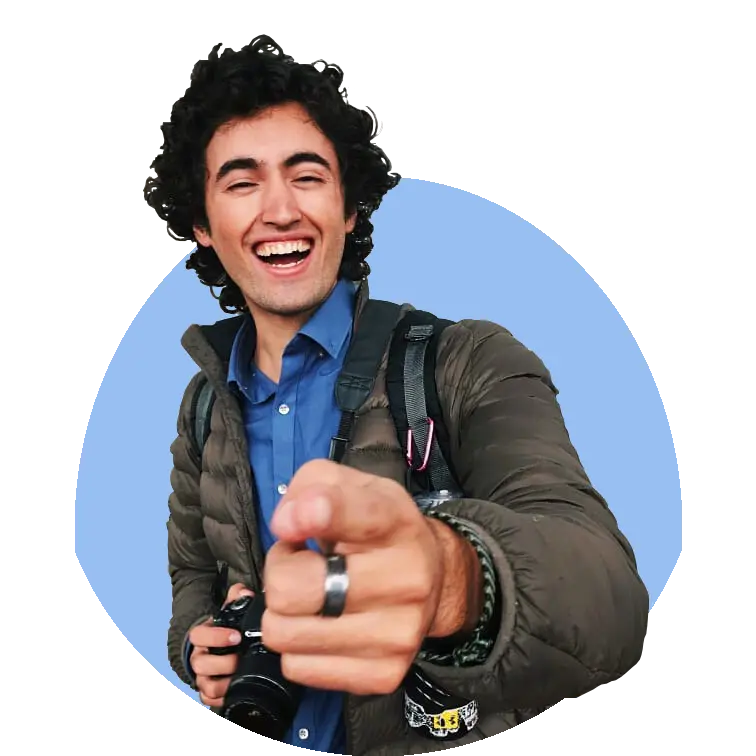

Hi there! I'm...
Daniel Stabile
A Passionate
I'm an aspiring engineer-physician studying computer science at Cornell University. I hope to one day develop inexpensive medical equipment and use them around the world as a practicing doctor.

ABOUT ME
An aspiring engineer-physician

My Skills
What I know
CODE
Python
oCaml
Java
HTML
CSS
Matlab
Bash Scripting
C#
TOOLS
Linux
Vim
VS Code
GitHub
CRAFT
Illustrator
Premiere
Photoshop
LATEST WORKS
My projects and research
Anomalous Flight Detection

June 2021 - August 2021
This summer I interned at MIT Lincoln Laboratories and worked on a project focused detecting anomalous flight activities using machine learning. I can't comment much on this project for security reasons, but my core contribution was developing a pipeline generate synthetic data which could be used for training. The problem with detecting anomalous flight activities is that they're anomalous... and hence rare. Using synthetic data helps create example data for models to train on!Vital Mask

August 2020 - December 2020
In the spring of 2020, several members of Cornell Biomedical Device broke off to create a startup, Vita Innovations. Our product, VitalMask, is a smart mask that measures patient vitals and is designed for ED waiting rooms. The idea was born during the beginning of the Covid-19 as a response to ED overcrowding. I worked on the website (see link below) and the desktop application which was written in Python using Kivy. The application allows for users to monitor multiple masks simultaneously through Bluetooth connections. The application allows for custom thresholds to be given to each mask’s vitals that sound an alert when they are exceeded.The startup is part of several accelerators and won 15k in seed funding after winning the Business Today’s 2020 Impact Challenge. For more information about VitalMask, check out the website link tomorrow.
BruxFree

August 2020 - December 2020
BruxFree is a bruxism monitoring system that alerts users when they are having an episode. The idea is the user can wear an external device with sensors that detect when the muscles of the jaw are clenching excessively. I pitched this idea in the fall of 2019 to my engineering team (Cornell Biomedical Device) and we worked on it in the Spring of 2020 for the Engineering Innovation competition, for which we placed as finalist. When we started building device, our product development team split into hardware and software. I led the latter in the creation of an android app that could be hooked up to our device and collect data and send notifications to users. You can find more information about the device on the engineering team’s website linked below.Multiphoton Image Processing Pipeline

August 2020 - December 2020
My main project for the Schaffer-Nishimura lab was the development of a MATLAB pipeline for pre-processing multiphoton acquisitions. Named the Multiphoton Image Processing Stream (MIPS as an homage to the processor architecture), this project was a yearlong endeavor and resulted in a program that serves as a standard for the lab. Members of the lab use the program to perform basic operations such as channel splitting, normalization, and comb correction among more. There were also more advanced features, such as unmixing and the use of custom TIFF tags to document operations performed on acquisitions. The code performs much faster than MATLABs standard operations as reading and writing images is performed through the ScanImage library.oCaml Database Management System

August 2019 - December 2019
In the fall of 2019, I took CS 3110 Data Structures and Functional Program taught by Michael Clarkson (one of the best professors at Cornell). As our final project, my team decided to implement a database management system in oCaml using SQL as our standard. We implemented multiple SQL queries such as INSERT, DELETE, SELECT, WHERE, LIKE, ORDER BY and SELECT IN. We also added some of our own custom queries to create and delete databases. As my contribution to the project, I was in charge of the REPL code, the display of tables in terminal, and helped with implementation of some of the queries. Our professor was impressed enough that he emailed our team inviting us to demo the project to him personally.Below on the left is a link to the original project charter.
Recommendations
An aspiring engineer-physician
We were very fortunate to have Daniel as an Intern during the summer of 2020. He started making significant contributions to our Manufacturing code base almost immediately. I was quite impressed with his work ethic and knowledge of advanced techniques in image processing and computer science. Excellent grasp of complex measurement systems and the software used to control them. This is someone you will want on your team.
Dave Beecher
Director of Software Engineering, MaculogixDan contributed a tremendous amount to our team during his time with us. Insatiable curiosities drove him on a continual path of learning and self-improvement. He always strove towards pushing the boundaries of our services and diversifying skills that he could share with our community members. Joining our team during the formative years of our makerspace, his insight and legacy can still be seen today. Dan's initiative, dedication, and cheerful personality will serve as invaluable parts of any future team he joins!
Jimmy McKee
Makerspace Manager, CornellDaniel is an established and effective leader within the South Campus community at Cornell University. The plethora of programming experiences he has implemented, have been successful, relevant, and engaging. Daniel's communication and advocacy have been vital in validating his leadership capabilities as a valuable member of our team. It is without a doubt, he will continue in meeting and exceeding your teams and/or organization's needs and expectations.
Vernon Miller
South Campus Area Coordinator, Cornell UniversityVolunteer Experience
How I share my time

Ithaca Free Clinic

2020 - 2021
I’ve been volunteering at the Ithaca Free Clinic since the beginning of 2020. The IFC has been the door into the medical world for me and has shown me what it might be like to be a physician. As a volunteer I have several responsibilities including administrative tasks and working reception. An ongoing project for me has been helping the clinic transition to electronic health records using Athena, their EHR system.Working at this clinic has been very informative, as I’ve had the opportunity to observe how physicians interact with their patients and interact personally with the patients myself. A lot of the patients who come to the free clinic have no other options for health care, so I’m often interacting with them at a vulnerable moment in their lives. It’s been a blessing to volunteer here and has helped show me that I can pursue a career in the medical field.
Cayuga Medical

March 2020 - May 2020
When the Covid-19 pandemic hit in 2020, Cornell University closed in person classes and moved everything online. While most students had to go home, I stayed in Ithaca to fulfill my duties as an RA for the residents who couldn’t return to their homes. During this time, there was a severe shortage of PPE and the local hospital, Cayuga Medical Center, put on an initiative to produce homemade masks. Once a week, I would go to a gymnasium on Cornell’s campus where dozens of sewing machines had been set up. Using what my grandmother taught me in Ecuador, I helped sew surgical-grade masks to be used not only in Cayuga but other nearby hospitals short of PPE.In total we were able to construct over 90,000 masks to help sustain PPE levels for front-line workers. My contribution was miniscule, but when everyone works together, a little bit from each adds up!
Cornell Cru

2019 - 2020
Upon returning to Cornell in 2018, I re-joined Cru Cornell, a Christian fellowship. During this year, I became part of the volunteer leadership team where we organized, publicized, and attended events. We were heavily involved in Second Winds Cottages, a local organization that housed the homeless while helping them get back on their feet. We also volunteered with Habitat for Humanity, the Salvation Army, and Loaves and Fishes (a local soup kitchen). As my contribution to the team, I was in charge of designing flyers, driving people to locations, and helping publicize our events with our Christian community.Youth With A Mission

2016 - 2017
In 2016, I decided to leave Cornell after my freshman year to participate in Youth with a Mission (YWAM), a Christian organization with campuses all over the world. I went to the original campus in Lausanne, Switzerland where I participated in a discipleship training school (DTS). During this 3-month period we learned about the nature and character of God and how we could share our faith with others. Afterwards, we were sent to an undisclosed place in the middle east where 11 peers and I lived for several months, volunteering with local Christian ministries and evangelizing every day. Afterwards, I decided to stay with YWAM Lausanne for another 3 months where I participated in a Biblical Core Course (BBC) during which we read and studied the entire Bible.Overall, the experience with YWAM was very transformative for me. It helped solidify my faith and in a lot of ways grow up into an adult. The chance to live experience a different culture in such a deep and intimate way gave me a new perspective on my own upbringing and sparked a love for travelling to learn more about the world. Volunteering every day for such long hours was definitely challenging but extremely rewarding and I know that whatever I do in my life, I want it to be for good. Something where I will be helping those around me.
Travel
An avid traveller
I love exploring and learning about new countries and cultures through my travels. I hope to one day visit every country on the globe!
Get in touch
An aspiring engineer-physician